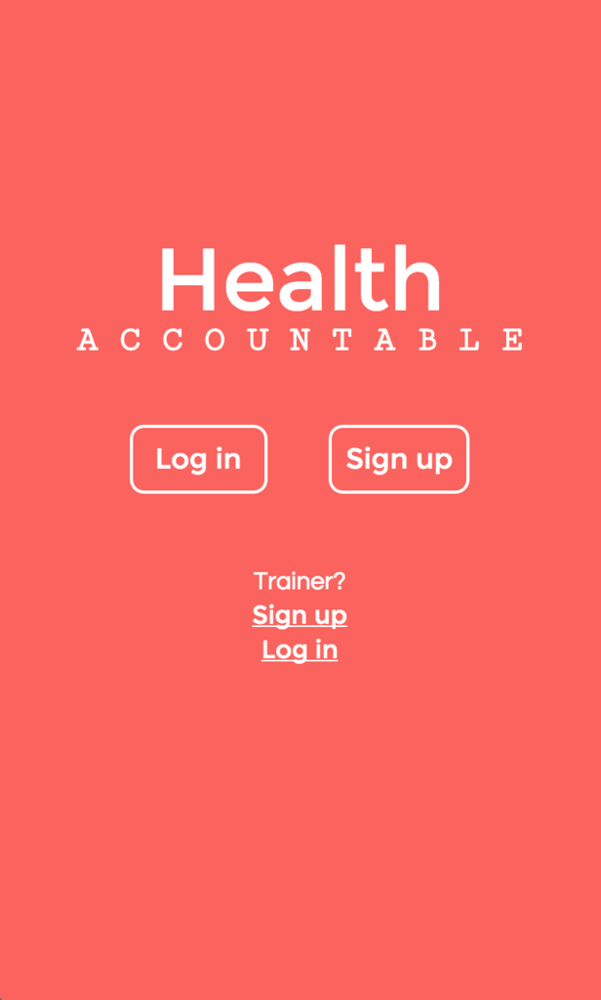

Portfolio

Health Accountable is a mobile-first application designed to help you reach your
exercise goals by transforming your friends and family into virtual workout
partners who hold you accountable for your health. On days you don’t work out,
your accountability contacts will get a text notifying them that you
failed to workout that day, helping keep you on track to reach your fitness goals.
I worked in an agile development cycle with a team of Ruby developers
on this project and it was presented as part of The Iron Yard's Demo Day.
I was responsible for the design and user interface of the site. Some of the
technologies I used on this project were HTML5, CSS3, Javascript, jQuery,
and Moment.js.

One of our first assignments at the Iron Yard was to create a memory/matching
game. We originally made this site with just HTML and CSS, but we went back
to it later in the cohort to implement Javascript and jQuery to get it functioning.
The original purpose of this project was to help us better understand CSS animations
as well as understanding a grid's aspect ratios. It was also useful to have a project
to go back to later in the semester and utilize the Javascript skills we had acquired
to make a functional game.

(resource)ful was my first project utilizing Angular. It is meant to be a
competitor site to Reddit or Hacker News. The main purpose of this assignment
was to become familiar with building a single page Angular application.
We also implemented routing on the site so that different pages (such as
the comments page, post new link page, etc.) could be present.

Hangman was my first assignment using Javascript at The Iron Yard. This project
was implemented without the use of jQuery, which definitely helped us better
understand how to manipulate the DOM through just a basic understanding of
Javascript. Along with JS, this project also utilized HTML5 and CSS3.